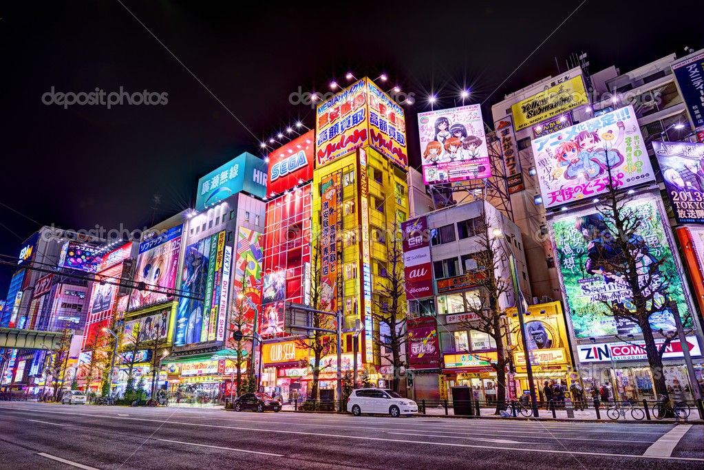
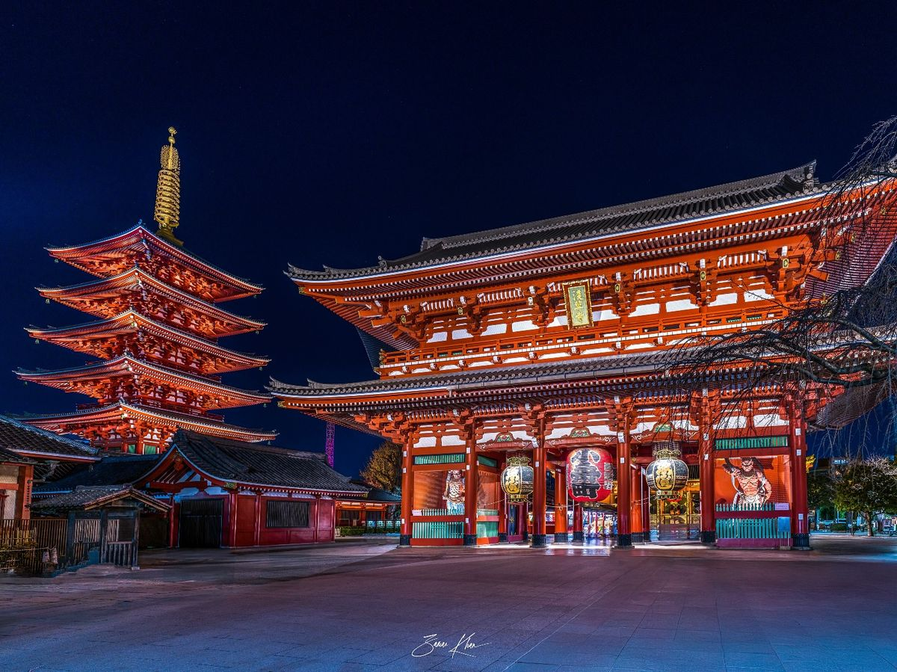
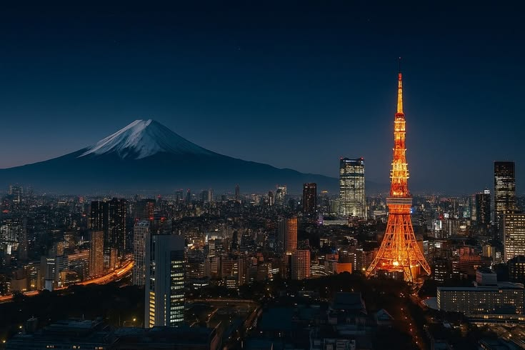
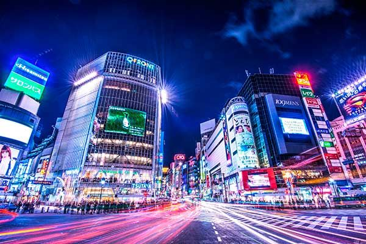

Shibuya
O cruzamento mais famoso do Japão, repleto de telas gigantes e luzes neon.

Akihabara
O paraíso gamer e tecnológico mais famoso de Tokyo.

Templos
História e tradição japonesa em meio à cidade futurista.

Tokyo Tower
Uma das vistas mais incríveis da cidade iluminada.

Noites Neon
Ruas vibrantes e cinematográficas cheias de energia e luzes.